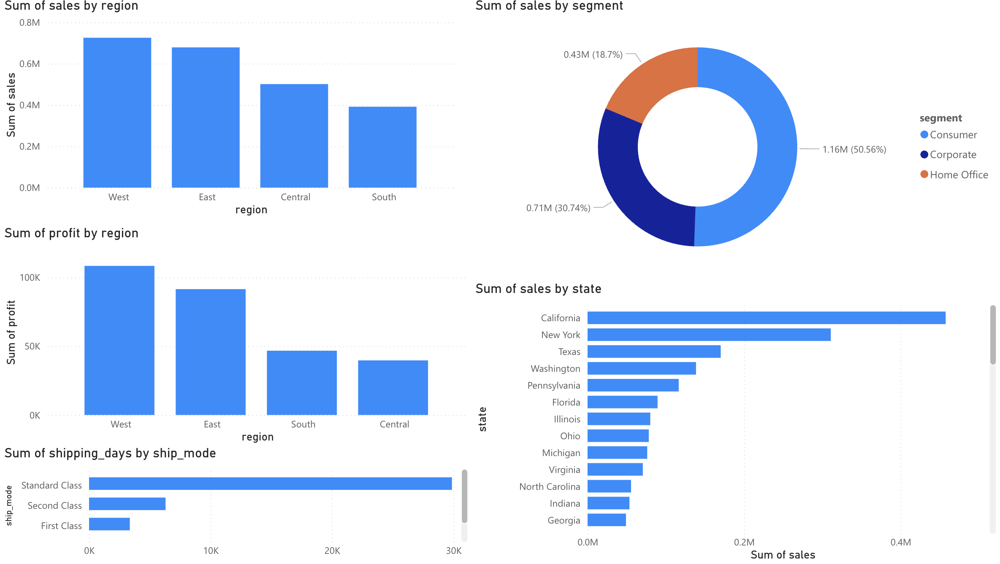
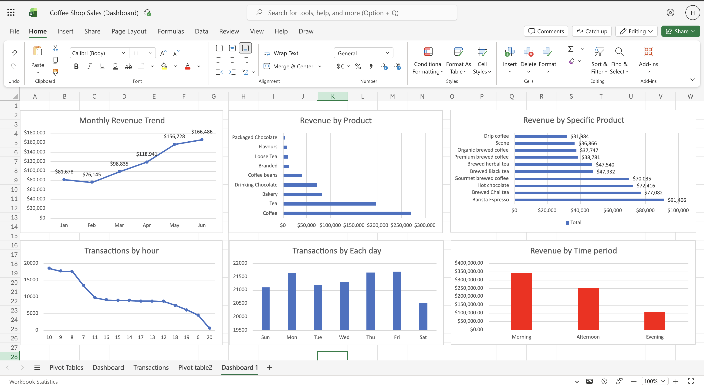
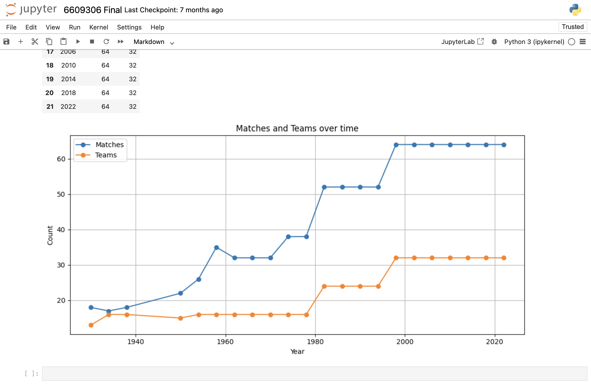

Computer Science Student | Aspiring Data Analyst
Final-year Computer Science student at Rangsit University with hands-on experience in SQL, Python, Excel, and Power BI. I enjoy transforming raw data into meaningful insights through data analysis, visualization, and dashboard development to support better business decisions.
I am a final-year Computer Science student at Rangsit University, focusing on data analytics, business analysis, and dashboard development. I have hands-on experience using Excel, SQL/MySQL, Python/Pandas, Power BI, and Jupyter Notebook through academic and personal projects.
I enjoy working with data to identify trends, build visual reports, and communicate insights in a clear and practical way. I am currently improving my skills through projects involving sales analysis, dashboard creation, data cleaning, and business reporting.
I am looking for internship opportunities where I can support data analysis, reporting, dashboard development, and business insight generation while learning from real-world data and experienced teams.
Excel PivotTables, charts, dashboards, exploratory analysis, and business insight generation.
Data querying, filtering, grouping, aggregation, and basic database analysis using MySQL.
Data cleaning, missing-value checking, data type inspection, CSV analysis, and basic visualization.
Dashboard creation, interactive visuals, filters, KPI reporting, and business performance analysis.
Analyzing trends, comparing performance, summarizing findings, and presenting insights clearly.
Jupyter Notebook, GitHub, Microsoft Word, Canva, project organization, and portfolio presentation.
These projects show my experience in data cleaning, dashboard development, visualization, and business insight generation using Excel, SQL/MySQL, Python/Pandas, Jupyter Notebook, and Power BI.
Built an interactive Power BI dashboard to analyze sales, profit, category, segment, and regional performance. This project helped me practice dashboard storytelling and business performance reporting.

Analyzed coffee shop sales data to understand revenue trends, product performance, store location performance, and hourly sales patterns.

Explored and cleaned a World Cup dataset to understand tournament patterns, team performance, and historical football trends.

My resume is available for opportunities related to data analytics, business analysis, reporting, and dashboard development.
My Resume